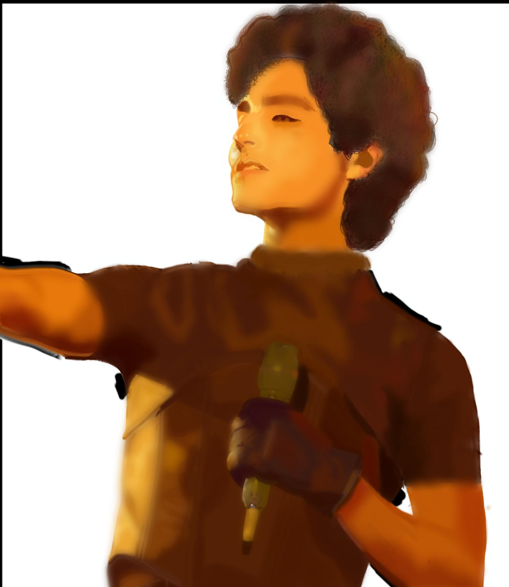

Categoría: Arte Visual e Ilustración
Selección de trabajos de dibujo e ilustración donde exploro diferentes técnicas visuales. En mis composiciones busco transmitir una sensación de tranquilidad y armonía, apoyándome a menudo en paletas de colores suaves y acogedores, integrando tonos cafes y amarillos, para darle una personalidad única y relajante a cada pieza.
